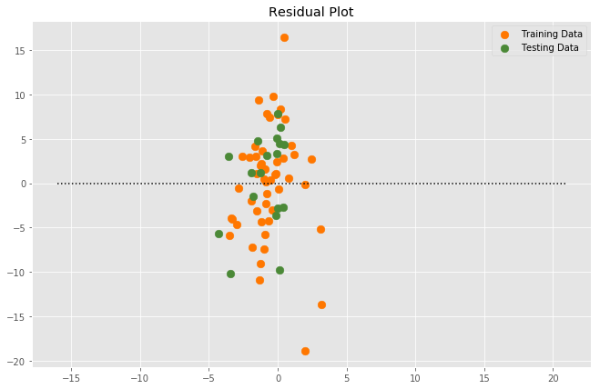
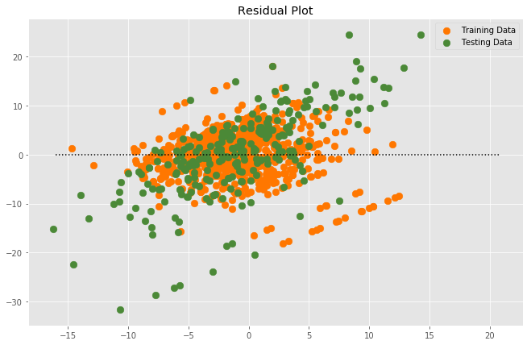
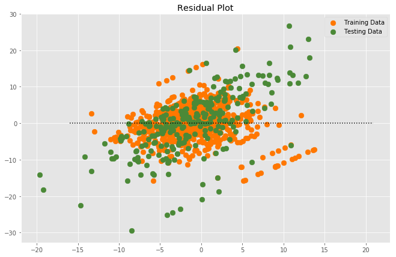

Mulitvariate Linear Regression Model
The model was trained using a Multivariate Linear Regression model on the VIX daily percent change from the CBOE and the New York Times financial and business news sentiment and Word2Vec.
Sentiment and Descriptive data (mean, std, percentile, etc.) Only

True output: [-3.41521869]
Predicted output: [-1.16815945]
Prediction Error: [2.24705924]
Mean Squared Error: [73.977]
R2 Score: [0.8228]
Word2Vec Vectors Only

True output: [-3.41521869]
Predicted output: [-2.68789057]
Prediction Error: [0.72732812]
Mean Squared Error: [76.268]
R2 Score: [0.8792]
Word2Vec Vectors and Sentiment

True output: [-3.41521869]
Predicted output: [-1.02022834]
Prediction Error: [2.39499035]
Mean Squared Error: [73.977]
R2 Score: [0.8228]